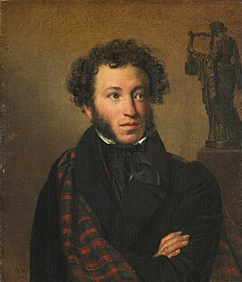

Александр Сергеевич Пушкин
Алекса́ндр Серге́евич Пу́шкин (6 июня 1799, Москва — 10 февраля 1837, Санкт-Петербург) — русский поэт, драматург и прозаик, заложивший основы русского реалистического направления, литературный критик и теоретик литературы, историк, публицист, журналист, редактор и издатель.